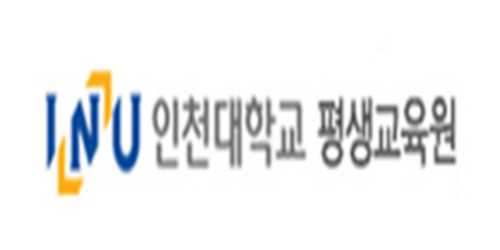
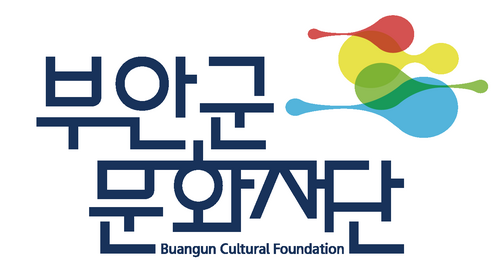
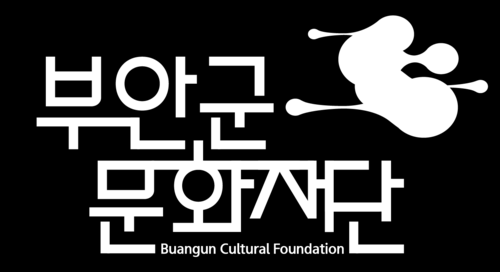
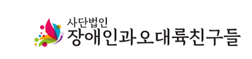
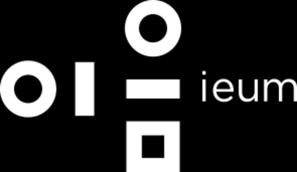
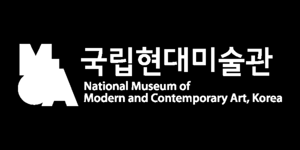
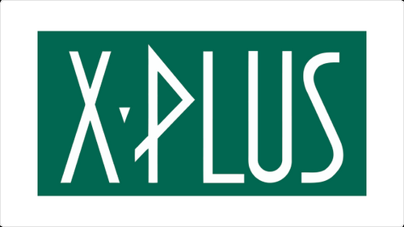
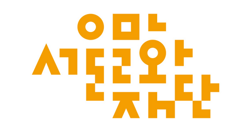
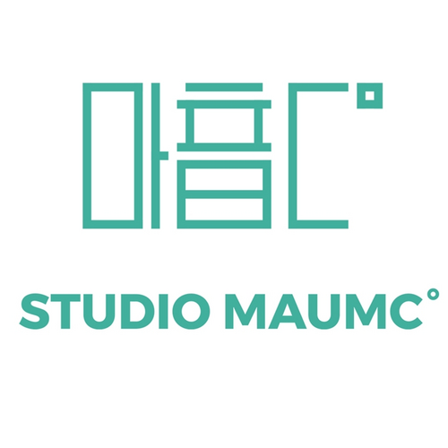

기술과 예술이
만나는 지점에서
버닝버니즈는 미디어아트, 영상, 전시, 공연, 디지털 기술을 기반으로 동시대적 예술 경험을 기획하고 제작하는 창작 스튜디오입니다.
우리는 기술을 단순한 장비나 효율의 수단으로 다루기보다, 사람의 감각과 기억, 정서, 관계를 새롭게 연결하는 예술의 매체로 바라봅니다.
동시에 장애예술 협업과 배리어프리 문화예술 실천을 통해, 서로 다른 몸과 감각을 지닌 사람들이 함께 예술을 경험할 수 있는 환경을 확장해 왔습니다. 창작의 실험성과 사회적 접근성을 함께 품으며, 동시대 문화예술의 새로운 장면을 만들어가고 있습니다.

Since 2004
아트센터 나비 프러덕션팀을 시작으로, 미디어아트·배리어프리 문화예술 현장에서 활동을 이어오고 있습니다.
12 Selected Projects
미디어아트 전시, 공연·라이브 비주얼, 뮤직비디오, 배리어프리 축제·포럼까지 다양한 매체의 대표 프로젝트를 소개합니다.
Int'l Festivals & Forums
국내외 영화제·아트페어 수상 및 초청, OECD 국제포럼 기획 등 창작과 공공성을 잇는 활동을 지속하고 있습니다.
감각을 넓히고,
구조를 만듭니다
버닝버니즈는 창작은 새로운 감각을 제안하는 일이며, 배리어프리는 그 감각을 더 많은 사람과 연결하는 구조를 만드는 일이라고 믿습니다.
Art
영상, 전시, 공연, 미디어아트 기반 창작
Inclusion
장애예술 협업, 감각 다양성, 배리어프리 실천
Technology
AI, 디지털미디어, 인터랙티브, 문화기술 연계
“접근성은 부가 기능이 아니라, 동시대 예술 기획의 중요한 조건입니다.”
넘나드는 매체,
연결되는 언어
버닝버니즈의 창작활동은 영상, 미디어아트, 전시, 공연, AI 기반 콘텐츠 등 다양한 매체를 넘나들며 전개됩니다. 기술적 구현에 머무르지 않고, 감각과 기억, 현실과 상상, 개인과 사회의 관계를 시청각 언어로 재구성하는 작업을 지속해 왔습니다.


더 많은 사람에게
열려 있는 예술
버닝버니즈는 예술이 더 많은 사람에게 열려 있어야 한다는 관점에서, 장애예술 협업과 배리어프리 문화예술 실천을 지속해 왔습니다. 이는 단순한 지원의 개념이 아니라, 서로 다른 몸과 감각을 가진 사람들이 동등하게 예술을 경험하고 창작할 수 있도록 환경과 구조를 설계하는 일입니다.
접근성은 부가 기능이 아니라,
동시대 예술 기획의 중요한 조건
함께 만들어온 협업
버닝버니즈는 전시, 공연, 영상, 공공예술, 장애예술, 기술기반 콘텐츠 등 다양한 영역의 기관 및 창작자와 협업하며 프로젝트를 확장해 왔습니다. 기획, 연출, 기술, 현장 운영, 공공 커뮤니케이션까지 아우르는 협업 구조를 통해 실질적인 실행력을 축적하고 있습니다.


















버닝버니즈는 장애예술, 배리어프리 문화예술, 미디어아트, 공연·전시·축제, 국제교류 프로젝트를 통합적으로 이끌어 온 창작 스튜디오입니다. 2012년부터 배리어프리 다원예술축제 페스티벌 NADA를 비롯한 다양한 문화예술 현장에서 장애와 비장애, 예술과 기술, 지역과 국제교류를 연결해 왔으며, 관객의 감각과 접근성을 확장하는 포용적 문화예술 플랫폼을 기획·연출해 왔습니다.
컴퓨터그래픽과 뉴미디어 기술을 기반으로 미디어아트와 디지털 콘텐츠 작업을 확장해 왔고, 현재 AI 기반 창작과 기술 융합 역량을 심화하고 있습니다.